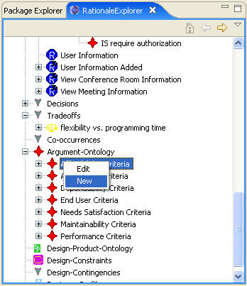
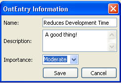

Argument Ontology is a hierarchy of common argument types that serve as types of claims that can be used in the system. These are used to provide the common vocabA-8 ulary required for inferencing. Each ontology entry contains an importance that can be overridden by claims that reference it.
In order to create a new ontology entry, right-click any of elements under the Argument Ontology in the RationaleExplorer and choose new, which will bring up the ontology entry editor. Or we could edit an existing ontology entry by right-click the name of an existing ontology entry and choose edit or by double-clicking the name of the ontology entry. See the following figures:

The following figure shows the Ontology Entry Editor. This describes the entry and gives its Importance. This Importance will be inherited by any claims that reference the ontology entry.
